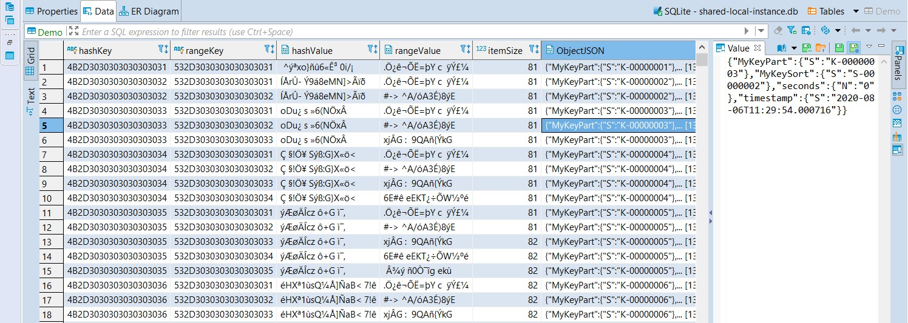

This was first published on https://www.dbi-services.com/blog/aws-dynamodb-local/ (2020-08-07)
Republishing here for new followers. The content is related to the versions available at the publication date.
.
DynamoDB is a cloud-native, managed, key-value proprietary database designed by AWS to handle massive throughput for large volume and high concurrency with a simple API.
One problem with cloud-native solution is that you need to access the service during the development of your application. This is not a major cost issue because DynamoDB is available on the Free Tier (with limited throughput, but that’s sufficient for development). But users may want to develop offline, on their laptop, without a reliable internet connection. And this is possible because Amazon provides a downloadable version of this database: DynamoDB Local.
The most important thing is that the API is the same as with the cloud version. For sure, all the partitioning stuff is missing in the local version. And I have no idea if the underlying data format is similar or not:
https://twitter.com/FranckPachot/status/1291313397171138561?s=20However, this is more for curiosity. The local version just needs a compatible API. You will not measure the performance there. And from what I’ve discovered below, I’m sure the storage is completely different in the cloud version.
[oracle@cloud DynamoDBLocal]$ cat /etc/oracle-release
Oracle Linux Server release 7.7
[oracle@cloud DynamoDBLocal]$ cat /etc/redhat-release
Red Hat Enterprise Linux Server release 7.7 (Maipo)
I am doing this installation on OEL 7.7 which is similar to RHEL 7.7 or CentOS 7.7
[oracle@cloud DynamoDBLocal]$ java -version
java version "1.8.0_231"
Java(TM) SE Runtime Environment (build 1.8.0_231-b11)
Java HotSpot(TM) 64-Bit Server VM (build 25.231-b11, mixed mode)
I have a JRE installed
mkdir -p /var/tmp/DynamoDBLocal && cd $_
I’m installing everything in a local temporary directory.
All is documented in: https://docs.aws.amazon.com/amazondynamodb/latest/developerguide/DynamoDBLocal.DownloadingAndRunning.html#download-locally
curl https://s3.eu-central-1.amazonaws.com/dynamodb-local-frankfurt/dynamodb_local_latest.tar.gz | tar -xvzf -
This simply downloads and extract the DynamoDB local distribution
java -Djava.library.path=/var/tmp/DynamoDBLocal/DynamoDBLocal_lib -jar /var/tmp/DynamoDBLocal/DynamoDBLocal.jar -sharedDb -dbPath /var/tmp/DynamoDBLocal &
This will use a persistent file (you can run it in memory only with -inMemory instead of it) in the directory mentioned by -dbPath and -sharedDb will use the following file name:
[oracle@cloud ~]$ ls -l /var/tmp/DynamoDBLocal/shared-local-instance.db
-rw-r--r-- 1 oracle oinstall 12346368 Aug 6 12:20 /var/tmp/DynamoDBLocal/shared-local-instance.db
I’ll tell you more about this file later.
so, when started it displays on which port it listens:
[oracle@cloud ~]$ pkill -f -- '-jar DynamoDBLocal.jar -sharedDb'
[oracle@cloud ~]$ java -Djava.library.path=/var/tmp/DynamoDBLocal/DynamoDBLocal_lib -jar /var/tmp/DynamoDBLocal/DynamoDBLocal.jar -sharedDb -dbPath /var/tmp/DynamoDBLocal &
[1] 33294
[oracle@cloud ~]$ Initializing DynamoDB Local with the following configuration:
Port: 8000
InMemory: false
DbPath: /var/tmp/DynamoDBLocal
SharedDb: true
shouldDelayTransientStatuses: false
CorsParams: *
Another port can be defined with -port
I use the AWS commandline interface, here is how to install it:
wget --continue https://awscli.amazonaws.com/awscli-exe-linux-x86_64.zip
unzip -oq awscli-exe-linux-x86_64.zip
sudo ./aws/install
aws configure
For the configuration, as you are local, you can put anything you want for the access key and region:
[oracle@cloud ~]$ aws configure
AWS Access Key ID [****************chot]: @FranckPachot
AWS Secret Access Key [****************chot]: @FranckPachot
Default region name [Lausanne]: Lausanne
Default output format [table]:
Because this information is not used, I’ll need to define the endpoint “–endpoint-url http://localhost:8000” with each call.
aws dynamodb --endpoint-url http://localhost:8000 create-table \
--attribute-definitions \
AttributeName=MyKeyPart,AttributeType=S \
AttributeName=MyKeySort,AttributeType=S \
--key-schema \
AttributeName=MyKeyPart,KeyType=HASH \
AttributeName=MyKeySort,KeyType=RANGE \
--billing-mode PROVISIONED \
--provisioned-throughput ReadCapacityUnits=25,WriteCapacityUnits=25 \
--table-name Demo
I mentioned some provisioned capacity ready for my test on the Free Tier but they are actually ignored by DynamoDB local.
[oracle@cloud ~]$ aws dynamodb --endpoint-url http://localhost:8000 create-table \
> --attribute-definitions \
> AttributeName=MyKeyPart,AttributeType=S \
> AttributeName=MyKeySort,AttributeType=S \
> --key-schema \
> AttributeName=MyKeyPart,KeyType=HASH \
> AttributeName=MyKeySort,KeyType=RANGE \
> --billing-mode PROVISIONED \
> --provisioned-throughput ReadCapacityUnits=25,WriteCapacityUnits=25 \
> --table-name Demo
--------------------------------------------------------------------------------------------------------------------------------------------------------
| CreateTable |
+------------------------------------------------------------------------------------------------------------------------------------------------------+
|| TableDescription ||
|+----------------------------------+------------+-----------------------------------------------------+------------+-----------------+---------------+|
|| CreationDateTime | ItemCount | TableArn | TableName | TableSizeBytes | TableStatus ||
|+----------------------------------+------------+-----------------------------------------------------+------------+-----------------+---------------+|
|| 2020-08-06T12:42:23.669000+00:00| 0 | arn:aws:dynamodb:ddblocal:000000000000:table/Demo | Demo | 0 | ACTIVE ||
|+----------------------------------+------------+-----------------------------------------------------+------------+-----------------+---------------+|
||| AttributeDefinitions |||
||+------------------------------------------------------------------------+-------------------------------------------------------------------------+||
||| AttributeName | AttributeType |||
||+------------------------------------------------------------------------+-------------------------------------------------------------------------+||
||| MyKeyPart | S |||
||| MyKeySort | S |||
||+------------------------------------------------------------------------+-------------------------------------------------------------------------+||
||| KeySchema |||
||+----------------------------------------------------------------------------------------+---------------------------------------------------------+||
||| AttributeName | KeyType |||
||+----------------------------------------------------------------------------------------+---------------------------------------------------------+||
||| MyKeyPart | HASH |||
||| MyKeySort | RANGE |||
||+----------------------------------------------------------------------------------------+---------------------------------------------------------+||
||| ProvisionedThroughput |||
||+--------------------------------+---------------------------------+-----------------------------+-----------------------+-------------------------+||
||| LastDecreaseDateTime | LastIncreaseDateTime | NumberOfDecreasesToday | ReadCapacityUnits | WriteCapacityUnits |||
||+--------------------------------+---------------------------------+-----------------------------+-----------------------+-------------------------+||
||| 1970-01-01T00:00:00+00:00 | 1970-01-01T00:00:00+00:00 | 0 | 25 | 25 |||
||+--------------------------------+---------------------------------+-----------------------------+-----------------------+-------------------------+||
Another difference with the cloud version is that this command returns immediately (no “CREATING” status).
I’ll put some items with Python, thus installing it.
yum install -y python3
pip3 install boto3
boto3 is the AWS SDK for Python
Here is my demo.py program:
import boto3, time, datetime
from botocore.config import Config
dynamodb = boto3.resource('dynamodb',config=Config(retries={'mode':'adaptive','total_max_attempts': 10}),endpoint_url='http://localhost:8000')
n=0 ; t1=time.time()
try:
for k in range(0,10):
for s in range(1,k+1):
r=dynamodb.Table('Demo').put_item(Item={'MyKeyPart':f"K-{k:08}",'MyKeySort':f"S-{s:08}",'seconds':int(time.time()-t1),'timestamp':datetime.datetime.now().isoformat()})
time.sleep(0.05);
n=n+1
except Exception as e:
print(str(e))
t2=time.time()
print(f"Last: %s\n\n===> Total: %d seconds, %d keys %d items/second\n"%(r,(t2-t1),k,n/(t2-t1)))
I just fill each collection with an increasing number of items.
[oracle@cloud DynamoDBLocal]$ python3 demo.py
Last: {'ResponseMetadata': {'RequestId': '6b23dcd2-dbb0-404e-bf5d-57e7a9426c9b', 'HTTPStatusCode': 200, 'HTTPHeaders': {'content-type': 'application/x-amz-json-1.0', 'x-amz-crc32': '2745614147', 'x-amzn-requestid': '6b23dcd2-dbb0-404e-bf5d-57e7a9426c9b', 'content-length': '2', 'server': 'Jetty(8.1.12.v20130726)'}, 'RetryAttempts': 0}}
===> Total: 3 seconds, 9 keys 14 items/second
[oracle@cloud DynamoDBLocal]$
[oracle@cloud DynamoDBLocal]$ aws dynamodb --endpoint-url http://localhost:8000 scan --table-name Demo --select=COUNT --return-consumed-capacity TOTAL
----------------------------------
| Scan |
+----------+---------------------+
| Count | ScannedCount |
+----------+---------------------+
| 45 | 45 |
+----------+---------------------+
|| ConsumedCapacity ||
|+----------------+-------------+|
|| CapacityUnits | TableName ||
|+----------------+-------------+|
|| 0.5 | Demo ||
|+----------------+-------------+|
The nice thing here is that you can see the ConsumedCapacity which gives you an idea about how it scales. Here, I read 45 items that have a size of 81 bytes and this is lower than 4K. Then the cost of it is 0.5 RCU for eventually consistent queries.
You know how I’m curious. If you want to build a local NoSQL database, which storage engine would you use?
[oracle@cloud DynamoDBLocal]$ cd /var/tmp/DynamoDBLocal
[oracle@cloud DynamoDBLocal]$ file shared-local-instance.db
shared-local-instance.db: SQLite 3.x database
Yes, this NoSQL database is actually stored in a SQL database!
They use SQLite for this DynamoDB Local engine, embedded in Java.
[oracle@cloud DynamoDBLocal]$ sudo yum install sqlite
Loaded plugins: ulninfo, versionlock
Excluding 247 updates due to versionlock (use "yum versionlock status" to show them)
Package sqlite-3.7.17-8.el7_7.1.x86_64 already installed and latest version
Nothing to do
I have SQLite installed here and then can look at what is inside with my preferred data API: SQL.
[oracle@cloud DynamoDBLocal]$ sqlite3 /var/tmp/DynamoDBLocal/shared-local-instance.db
SQLite version 3.7.17 2013-05-20 00:56:22
Enter ".help" for instructions
Enter SQL statements terminated with a ";"
sqlite> .databases
seq name file
--- --------------- ----------------------------------------------------------
0 main /var/tmp/DynamoDBLocal/shared-local-instance.db
sqlite> .tables
Demo cf dm sm ss tr us
Here is my Demo table accompanied with some internal tables.
Let’s look at the fixed tables there (which I would call the catalog or dictionary if DynamoDB was not a NoSQL database)
sqlite> .headers on
sqlite> .mode column
sqlite> select * from cf;
version
----------
v2.4.0
sqlite>
That looks like the version of the database (Config Table)
sqlite> select * from dm;
TableName CreationDateTime LastDecreaseDate LastIncreaseDate NumberOfDecreasesToday ReadCapacityUnits WriteCapacityUnits TableInfo BillingMode PayPerRequestDateTime
---------- ---------------- ---------------- ---------------- ---------------------- ----------------- ------------------ --------------------------------------------------------------------------------------------- ----------- ---------------------
Demo 1596718271246 0 0 0 25 25 {"Attributes":[{"AttributeName":"MyKeyPart","AttributeType":"S"},{"AttributeName":"MyKeySort","AttributeType":"S"}],"GSIList":[],"GSIDescList":[],"SQLiteIndex":{"":[{"DynamoDBAttribute":{"AttributeName":"MyKeyPart","AttributeType":"S"},"KeyType":"HASH","SQLiteColumnName":"hashKey","SQLiteDataType":"TEXT"},{"DynamoDBAttribute":{"AttributeName":"MyKeySort","AttributeType":"S"},"KeyType":"RANGE","SQLiteColumnName":"rangeKey","SQLiteDataType":"TEXT"}]},"UniqueIndexes":[{"DynamoDBAttribute":{"AttributeName":"MyKeyPart","AttributeType":"S"},"KeyType":"HASH","SQLiteColumnName":"hashKey","SQLiteDataType":"TEXT"},{"DynamoDBAttribute":{"AttributeName":"MyKeySort","AttributeType":"S"},"KeyType":"RANGE","SQLiteColumnName":"rangeKey","SQLiteDataType":"TEXT"}],"UniqueGSIIndexes":[]} 0 0
sqlite>
Here are the (DynamoDB Metadata) about my table, the DynamoDB ones, like “AttributeName”,”AttributeType” and their mapping to the SQLite “SQLiteColumnName”,”SQLiteDataType”,…
The tables sm, ss, us, and tr are empty and are related with Streams Metadata, Shard Metadata, Streams and Transactions and I may have a look at them for a next post.
Now the most interesting one: my Demo table. For this one, I’ve opened it in DBeaver:

I have one SQLite table per DynamoDB table (global secondary indexes are just indexes on the table), one SQLite row per DynamoDB item, the keys (the HASH for partitioning and the RANGE for sorting within the partition) for which I used a string are stored as TEXT in SQLite but containing their ASCII hexadecimal codes (hashKey and rangeKey). And those are the columns for the SQLite primary key. They are also stored in an even larger binary (hashValue,rangeValue where hashValue is indexed), probably a hash function applied to it. And finally, the full item is stored as JSON in a BLOB. The itemSize is interesting because that’s what counts in Capacity Units (the sum of attribute names and attribute values).
Actually, there’s a big advantage to have this NoSQL backed by a SQL database. During the development phase, you don’t only need a database to run your code. You have to verify the integrity of data, even after some race conditions. For example, I’ve inserted more items by increasing the ‘k’ loop in my demo.py and letting it run for 6 hours:
[oracle@cloud aws]$ time aws dynamodb --endpoint-url http://localhost:8000 scan --table-name Demo --select=COUNT --return-consumed-capacity TOTAL
----------------------------------
| Scan |
+-----------+--------------------+
| Count | ScannedCount |
+-----------+--------------------+
| 338498 | 338498 |
+-----------+--------------------+
|| ConsumedCapacity ||
|+----------------+-------------+|
|| CapacityUnits | TableName ||
|+----------------+-------------+|
|| 128.5 | Demo ||
|+----------------+-------------+|
real 0m50.385s
user 0m0.743s
sys 0m0.092s
The DynamoDB scan is long here: 1 minute for a small table (300K rows). This API is designed for the cloud where a huge amount of disks can provide high throughput for many concurrent requests. There’s no optimization when scanning all items, as I described it in a previous post: RDBMS (vs. NoSQL) scales the algorithm before the hardware. SQL databases have optimization for full table scans, and the database for those 338498 rows is really small:
[oracle@cloud aws]$ du -h /var/tmp/DynamoDBLocal/shared-local-instance.db
106M /var/tmp/DynamoDBLocal/shared-local-instance.db
Counting the rows is faster from SQLite directly:
[oracle@cloud aws]$ time sqlite3 /var/tmp/DynamoDBLocal/shared-local-instance.db "select count(*) from Demo;"
338498
real 0m0.045s
user 0m0.015s
sys 0m0.029s
But be careful: SQLite is not a multi-user database. Query it only when the DynamoDB Local is stopped.
And with the power of SQL it is easy to analyze the data beyond the API provided by DynamoDB:
[oracle@cloud aws]$ sqlite3 /var/tmp/DynamoDBLocal/shared-local-instance.db
SQLite version 3.32.3 2020-06-18 14:00:33
Enter ".help" for instructions
Enter SQL statements terminated with a ";"
sqlite> .mode column
sqlite> .header on
sqlite> .timer on
sqlite> select count(distinct hashKey),count(distinct hashKey),count(distinct rangeKey),count(distinct rangeValue) from Demo;
count(distinct hashKey) count(distinct hashKey) count(distinct rangeKey) count(distinct rangeValue)
----------------------- ----------------------- ------------------------ --------------------------
823 823 822 822
CPU Time: user 0.570834 sys 0.168966
This simple query confirms that I have as many hash/range Key as Value.
sqlite> select cast(hashKey as varchar),json_extract(ObjectJSON,'$.MyKeyPart')
...> ,count(rangeKey),count(distinct rangeKey)
...> from Demo group by hashKey order by count(rangeKey) desc limit 10;
cast(hashKey as varchar) json_extract(ObjectJSON,'$.MyKeyPart') count(rangeKey) count(distinct rangeKey)
------------------------ -------------------------------------- --------------- ------------------------
K-00000823 {"S":"K-00000823"} 245 245
K-00000822 {"S":"K-00000822"} 822 822
K-00000821 {"S":"K-00000821"} 821 821
K-00000820 {"S":"K-00000820"} 820 820
K-00000819 {"S":"K-00000819"} 819 819
K-00000818 {"S":"K-00000818"} 818 818
K-00000817 {"S":"K-00000817"} 817 817
K-00000816 {"S":"K-00000816"} 816 816
K-00000815 {"S":"K-00000815"} 815 815
K-00000814 {"S":"K-00000814"} 814 814
Run Time: real 0.297 user 0.253256 sys 0.042886
There I checked how many distinct range keys I have for the 10 ones (LIMIT 10) with the highest value (ORDER BY count(rangeKey) DESC), and converted this hexadecimal int a string (CAST) and also compare with what is in the JSON column (JSON_EXTRACT). Yes, many RDBMS database can manipulate easily a semi-structured JSON with SQL.
sqlite> select
...> round(timestamp_as_seconds-lag(timestamp_as_seconds)over(order by timestamp)) seconds
...> ,MyKeyPart,MyKeySort,MyKeySort_First,MyKeySort_Last,timestamp
...> from (
...> select
...> MyKeyPart,MyKeySort
...> ,first_value(MyKeySort)over(partition by MyKeyPart) MyKeySort_First
...> ,last_value(MyKeySort)over(partition by MyKeyPart) MyKeySort_Last
...> ,timestamp,timestamp_as_seconds
...> from (
...> select
...> json_extract(ObjectJSON,'$.MyKeyPart.S') MyKeyPart,json_extract(ObjectJSON,'$.MyKeySort.S') MyKeySort
...> ,json_extract(ObjectJSON,'$.timestamp.S') timestamp
...> ,julianday(datetime(json_extract(ObjectJSON,'$.timestamp.S')))*24*60*60 timestamp_as_seconds
...> from Demo
...> )
...> )
...> where MyKeySort=MyKeySort_Last
...> order by timestamp desc limit 5
...> ;
seconds MyKeyPart MyKeySort MyKeySort_First MyKeySort_Last timestamp
---------- ---------- ---------- --------------- -------------- --------------------------
16.0 K-00000823 S-00000245 S-00000001 S-00000245 2020-08-07T04:19:55.470202
54.0 K-00000822 S-00000822 S-00000001 S-00000822 2020-08-07T04:19:39.388729
111.0 K-00000821 S-00000821 S-00000001 S-00000821 2020-08-07T04:18:45.306205
53.0 K-00000820 S-00000820 S-00000001 S-00000820 2020-08-07T04:16:54.977931
54.0 K-00000819 S-00000819 S-00000001 S-00000819 2020-08-07T04:16:01.003016
Run Time: real 3.367 user 2.948707 sys 0.414206
sqlite>
Here is how I checked the time take by the insert. My Python code added a timestamp which I convert it to seconds (JULIANDAY) and get the difference with the previous row (LAG). I actually did that only for the last item of each collection (LAST_VALUE).
Those are examples. You can play and improve your SQL skills on your NoSQL data. SQLite is one of the database with the best documentation: https://www.sqlite.org/lang.html. And it is not only about learning. During development and UAT you need to verify the quality of data and this often goes beyond the application API (especially when the goal is to verify that the application API is correct).
That’s all for this post. You know how to run DynamoDB locally, and can even access it with SQL for powerful queries 😉
{kind=link}